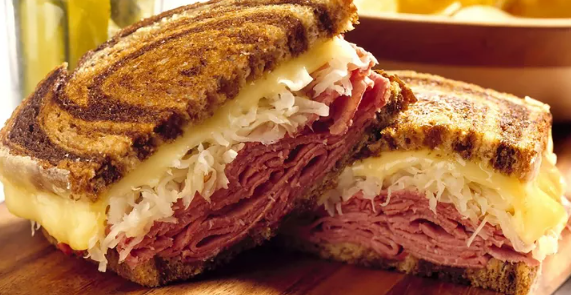

Reuben Sandwich

What Is a Reuben Sandwich?
A Reuben is a grilled sandwich featuring corned beef on rye bread. The Reuben is a menu
staple in Jewish-style delicatessens, but it's not technically kosher because it combines
meat and cheese.
Ingredients
- 8 slices rye bread
- ½ cup Thousand Island dressing
- 8 slices Swiss cheese
- 8 slices deli slices corned beef
- 1 cup sauerkraut, drained
- 2 tablespoons butter, softened
Directions
- Preheat a large griddle or skillet over medium heat.
- Spread one side of bread slices evenly with Thousand Island dressing. On four bread slices,
layer one slice Swiss cheese, 2 slices corned beef, 1/4 cup sauerkraut, and a second slice of
Swiss cheese. Top with remaining bread slices, dressing-side down. Butter the top of each sandwich.
- Place sandwiches, butter-side down on the preheated griddle; butter the top of each
sandwich with remaining butter. Grill until both sides are golden brown, about 5 minutes per side.Serve hot.
Return to main page